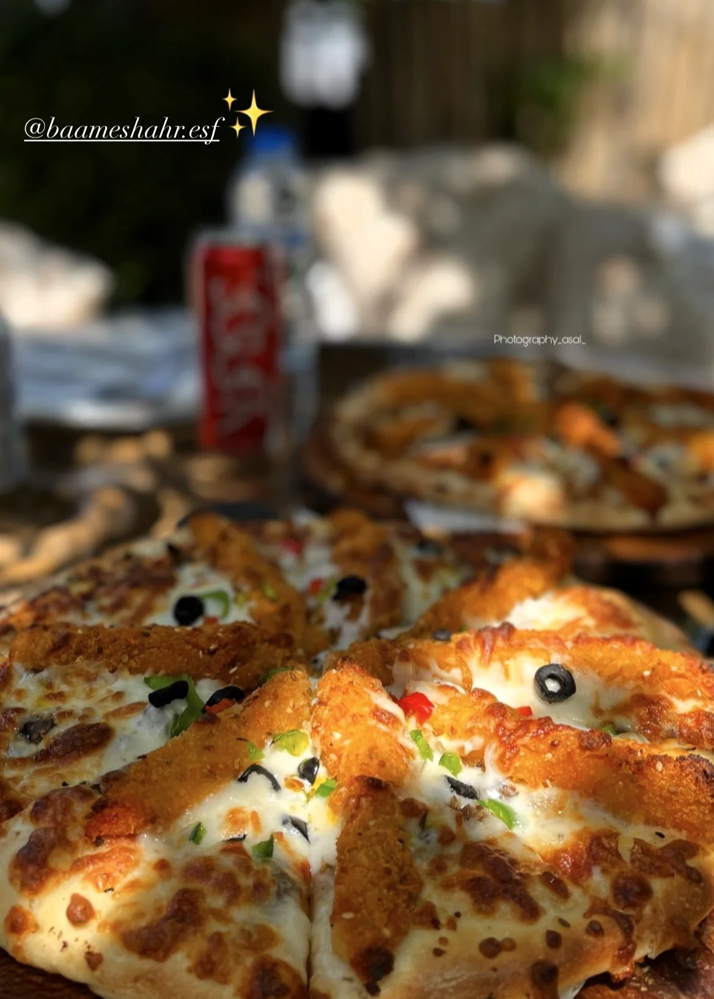
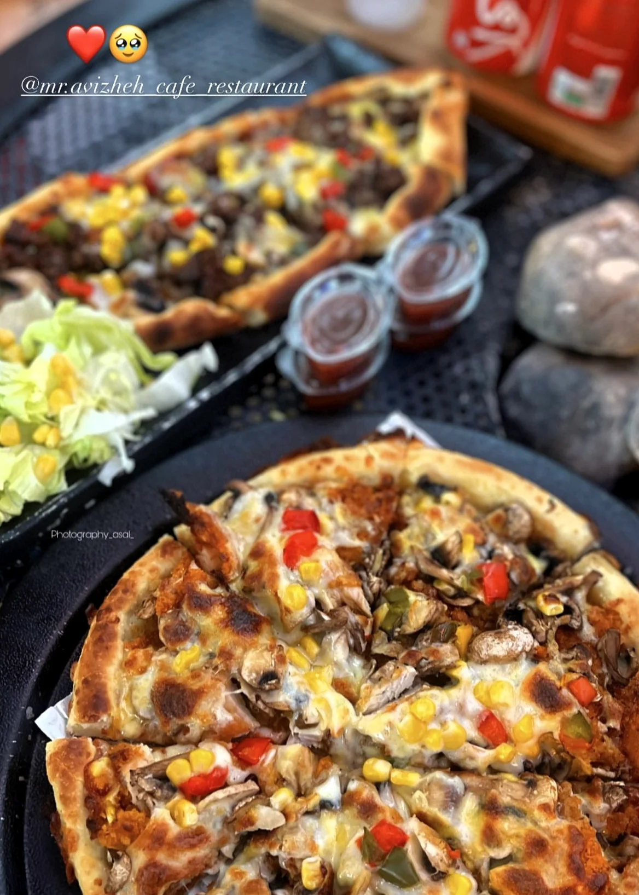
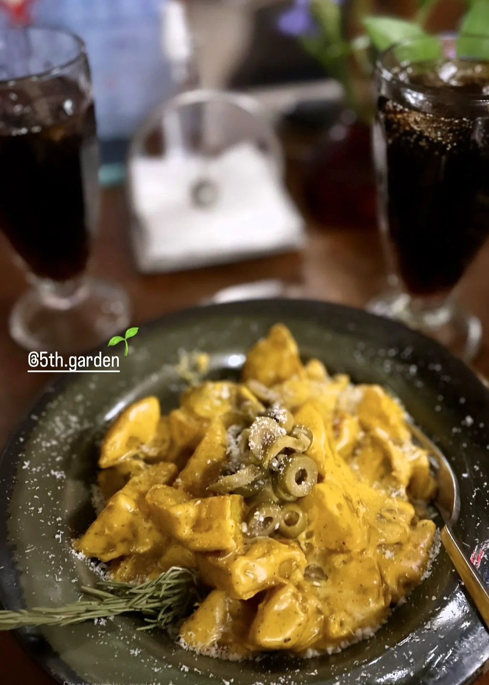
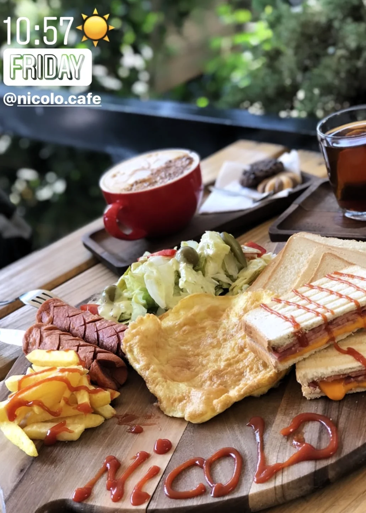
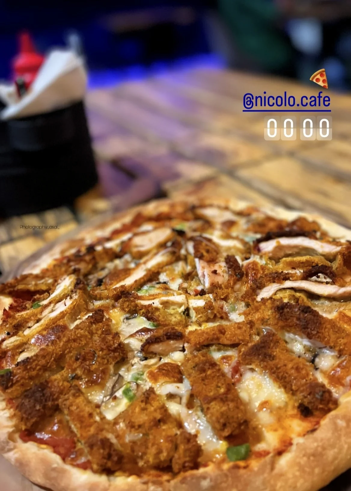
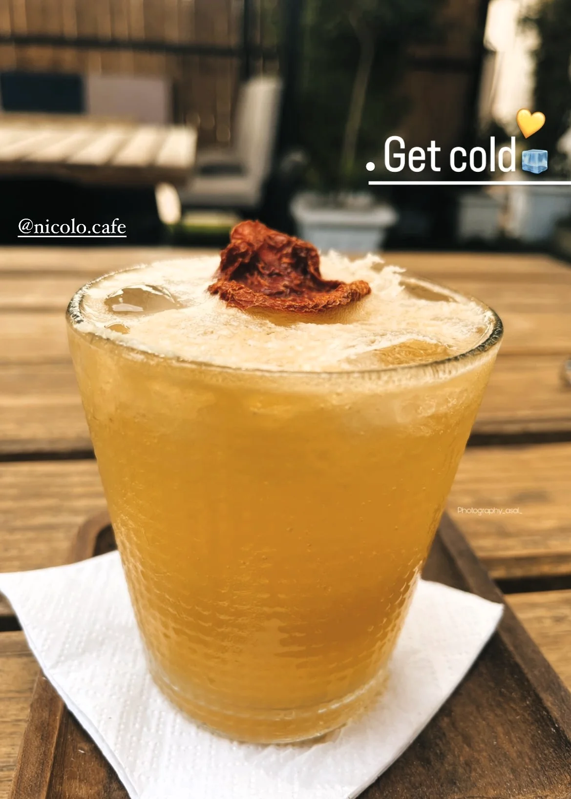
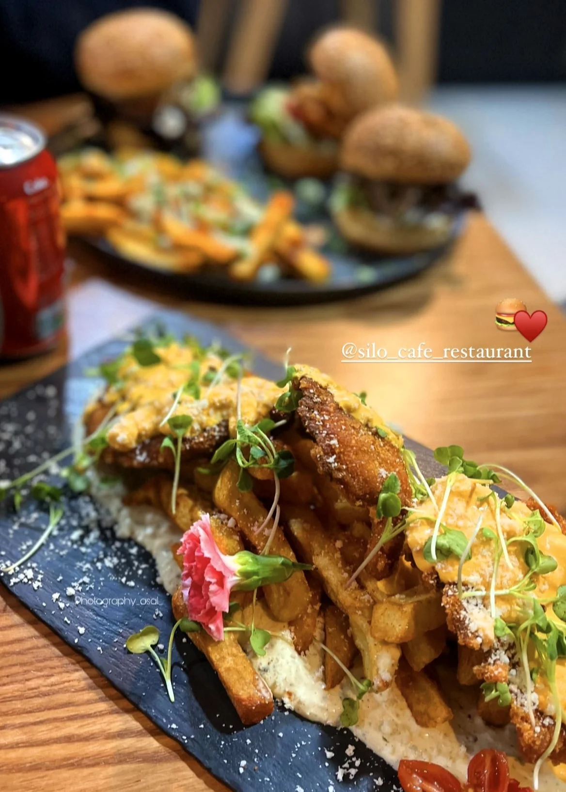
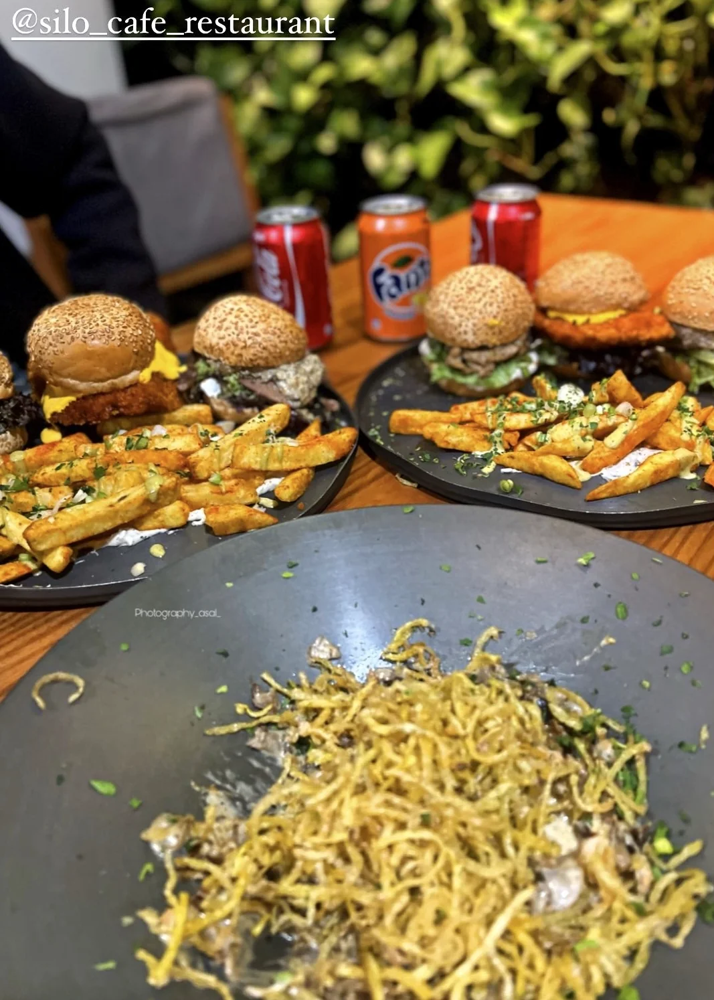
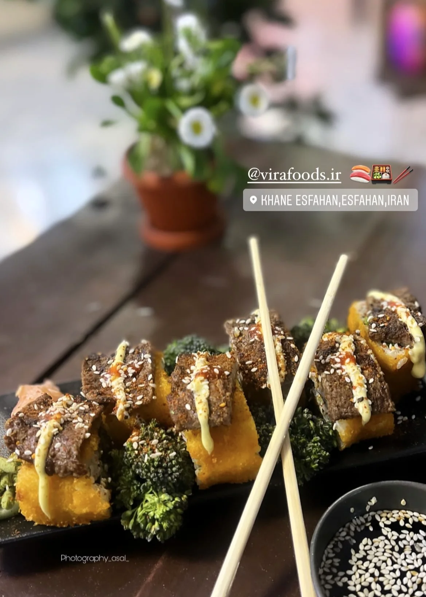
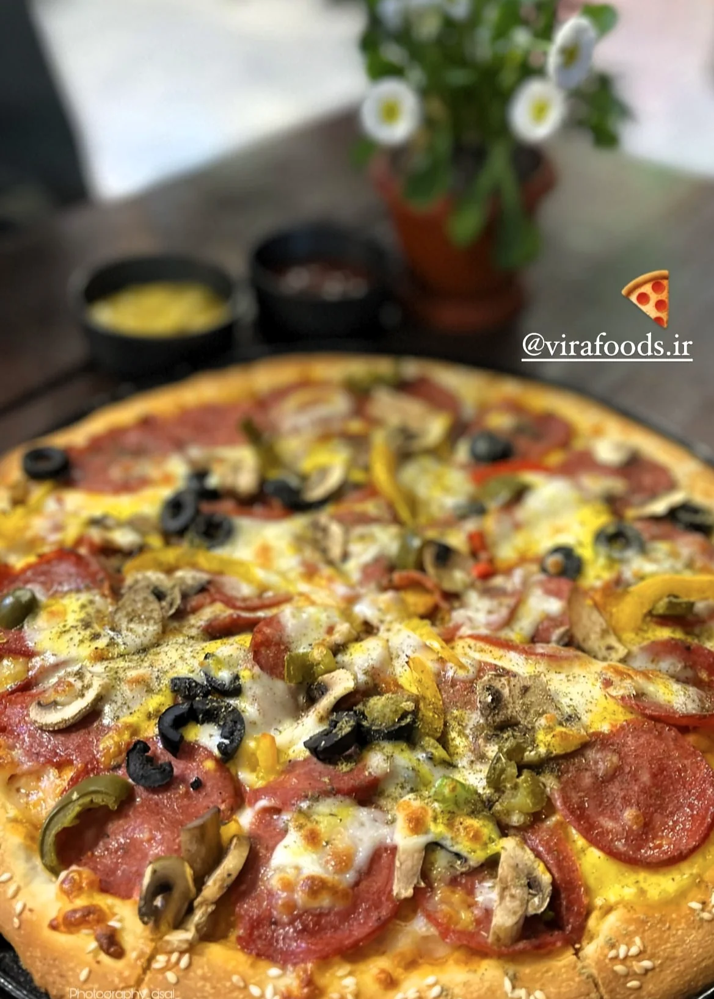

All projects
Collection · Commercial Photography
Social Media Photography
Commercial food and venue content developed to strengthen restaurant presentation and engagement on social media.
Collection overview
Commercial imagery made for digital audiences
The collection includes visual content for cafés and restaurants including Randevou, Baame Shahr, Mr Avizheh, Fifth Garden, Niccolo, Silo and Vira Foods.
Composition, colour and editing are used to highlight food, atmosphere and brand identity for social platforms.
Eleven photographs
Commercial gallery
A selection of restaurant and café content created for social-media use.










Continue exploring
Back to projects